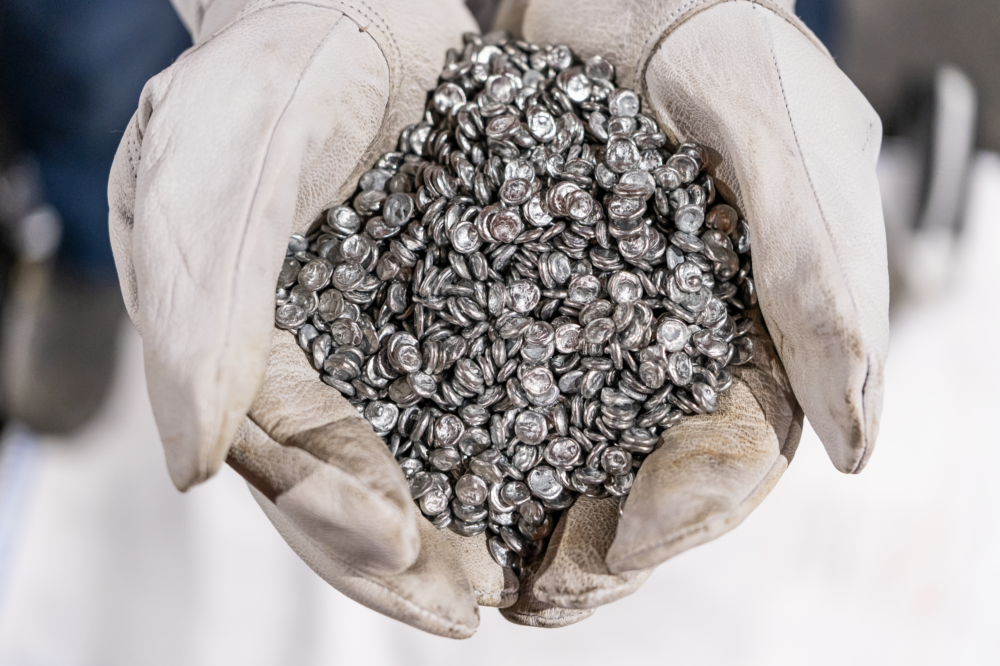

Elemento químico de símbolo Zn, número atómico 30 y peso atómico 65.37. Es un metal maleable, dúctil y de color gris. Se conocen 15 isótopos, cinco de los cuales son estables y tienen masas atómicas de 64, 66, 67, 68 y 70. Cerca de la mitad del zinc común se encuentra como isótopo de masa atómica 64.

El uso principal del zinc está en la galvanización de chapas de hierro o alambres. En aire húmedo, el zinc se oxida y se recubre con una película dura de carbonato de zinc, que lo protege de corrosión adicional. La galvanización se realiza por inmersión del hierro en zinc fundido.